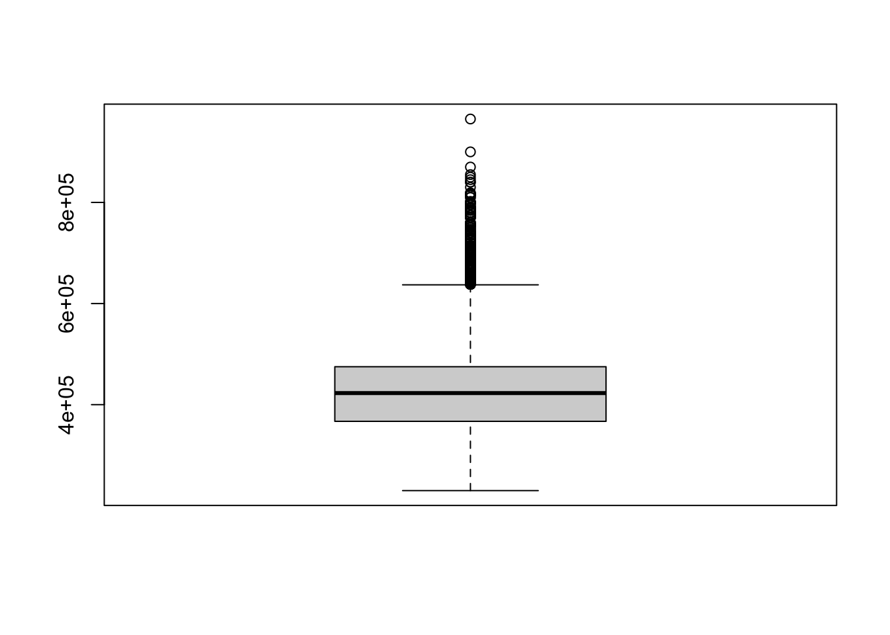

Hi! I‚Äôm Ray! Welcome to your ultimate DSA1101 survival guide! üéâ Whether you‚Äôre new to data science or leveling up for finals, this helpsheet blog has bite-sized tips, easy code, and all the cheat codes you need. üöÄ From data wrangling to machine learning, I‚Äôve got you covered. Ready to dive in? Let‚Äôs go! üòé
General Notes
Bayes Theorem
Suppose that 5% of all emails are spams. The phrase “you are a winner” occurs in 50% spam emails, and in 10% of non-spam emails.
Odds and Odds Ratio
Interpreting the Value of Odds Ratio:
OR = 1: The odds of the event are the same in both groups; no association between the exposure and the outcome.
OR > 1: The event is more likely to occur in Group 1 than in Group 2. A higher odds ratio indicates a stronger association.
OR < 1: The event is less likely to occur in Group 1 than in Group 2, indicating a negative association or a protective effect.
Practical Example: Suppose you are studying whether smoking (exposure) is associated with lung cancer (outcome):
If the OR = 2.5, it means smokers are 2.5 times more likely to develop lung cancer than non-smokers.
If the OR = 0.5, it means smokers are half as likely (or have a 50% reduced odds) to develop lung cancer compared to non-smokers.
Example in Context:
Group
Outcome = Yes
Outcome = No
Odds
Exposed
30
70
( 30/70 = 0.43 )
Not Exposed
15
85
( 15/85 = 0.18 )
Odds ratio:
\(\text{OR} = \frac{0.43}{0.18} \approx 2.39\)
Interpretation: The odds of the outcome (e.g., disease) are 2.39 times higher for the exposed group compared to the non-exposed group.
Non-parametric: Makes no assumptions about the underlying data distribution.
Handles Nonlinear Boundaries: Works well for complex decision boundaries.
Cons
Require Feature Scaling: Requires normalization or standardization of features to ensure fair distance calculations.
Sensitive to Noise and Outliers: Outliers can significantly affect predictions.
Decision Tree
Pros
Interpretable and Visualizable: Easy to understand and explain; can visualize the tree structure.
Handles Both Numerical and Categorical Data: Flexible in dealing with mixed data types.
No Need for Feature Scaling: Works directly with raw data.
Captures Nonlinear Relationships: Can model complex patterns in data.
Cons
Prone to Overfitting: Without pruning or limiting depth, it can memorize the training data.
Instability: A small change in data can lead to a completely different tree structure.
Bias Towards Dominant Features: May prioritize features with more unique levels or high variance.
Linear Regression
Pros
Theoretical Insights: Provides coefficients that indicate feature importance and direction of influence.
Good for Linearly Related Data: Performs well when the relationship between features and target is linear.
Cons
Assumes Linearity and Symmetrical Data: Performs poorly if the relationship between features and the target is nonlinear.
Sensitive to Outliers: Outliers can heavily skew the model.
Multicollinearity Issues: High correlation among features can lead to unreliable coefficients.
Only Numerical Features: Requires categorical features to be encoded (turned into factor), which adds preprocessing complexity.
Logistic Regression
Pros
Simple and Interpretable: Easy to implement and interpret, especially for binary classification.
Efficient: Works well with smaller datasets and linearly separable data.
Probability Outputs: Provides probabilities, making it suitable for tasks requiring confidence scores.
Cons
Assumes Linear Decision Boundary: Struggles with data that has nonlinear relationships unless transformed.
Sensitive to Outliers: Outliers can distort predictions and coefficients.
Feature Engineering Required: May need transformations or interaction terms for better performance.
Only Numerical Features: Requires encoding (turning into factor) of categorical variables.
Naive Bayes
Pros
Simple and Interpretable: Based on straightforward probability calculations.
Handles Missing Data: Some variants can handle missing values effectively.
Good for Text Data: Performs well in applications like spam filtering and sentiment analysis.
Cons
Assumes Feature Independence: Relies on the strong (and often unrealistic) assumption that features are independent.
Sensitive to Correlated Features: Correlated features can degrade performance significantly.
Limited Decision Boundaries: Cannot model complex relationships between features and the target.
Class Imbalance Issues: May perform poorly with imbalanced datasets without proper adjustments.
Comparison Table
Model
Pros
Cons
KNN
Non-parametric, simple, models nonlinear data
Sensitive to scaling, computationally expensive
Decision Tree
Interpretable, nonlinear, handles mixed data
Prone to overfitting, instability
Linear Regression
Simple, interpretable, fast
Assumes linearity, sensitive to outliers
Logistic Regression
Efficient, interpretable, provides probabilities
Assumes linear boundary, sensitive to outliers
Naive Bayes
Fast, interpretable, handles high dimensions
Assumes feature independence, limited boundaries
Choosing a Model
Use KNN: For small datasets with nonlinear relationships.
Use Decision Tree: For interpretable models with mixed data types or nonlinear patterns.
Use Linear Regression: For simple regression problems with linearly related data.
Use Logistic Regression: For binary classification problems with linearly separable data.
Use Naive Bayes: For text classification or when feature independence is a reasonable assumption.
Unsupervised Algorithm
Pros
Cons
K-Means
Simple, scalable, handles numerical data well
Sensitive to initialization, assumes spherical clusters
Apriori Algorithm
Intuitive, interpretable results, useful for rule mining
Computationally expensive, struggles with large/high-dimensional datasets
Tutorial Questions
T1 (Introduction to R)
Offsite Questions (Functions)
General idea of this problem: You have just graduated from NUS and just started your first job. You plan to buy a flat on your own which has price = $1,200,000 (1.2 million dollars). You need to save money for several years before you can afford to make the down payment which is 25% of the flat’s price.
Call the amount that you have saved thus far: saved. You start the very first month with a savings of $10,000 that your parents gave you.
Call your monthly salary as salary which is paid at the end of every month. Each month, you are going to dedicate 40% of your salary to save for the down payment.
Assume that you invest your savings wisely, with a monthly average return of 2%. That means: at the end of each month, you receive an additional of saved ×0.02 funds where saved is the amount you have from end of previous month to put into your savings.
At the end of each month, your savings will be increased by the return on your investment, plus 40% of your monthly salary.
Note: In your code for the questions below, you MUST use the names as given in bold above.
Write the code to calculate how many months it will take you to save up enough money for the down payment for two persons of of diferent salary: (i) salary = $7,000; and (ii) salary = $10,000.
In question above, we unrealistically assumed that the salary doesn’t change over the years. However, now we consider that the salary will be raised every 4 months by a rate named rate, this variable should be in decimal form (i.e. 0.03 for 3%). The new salary will be applied for the month after every batch of 4 months.
With this further assumption, write the code to calculate how many months it will take a person to save up enough money for the down payment if that person has (i) (salary = $7,000 and rate = 0.02); (ii) (salary = $10,000 and rate = 0.01).
Find the smallest value of \(n\) such that \(y_n \geq 300,000\).
y <-numeric()y <-append(y, 2800+1.02*10000) while (max(y) <300000) { y <-c(y, 2800+1.02*max(y))}length(y) # 55
[1] 55
y[55] # 305759.6
[1] 305759.6
T2 (Basic Prob and Stats)
#df = read.csv(...) # Imports the dataframe# BY DEFAULT, READ.CSV:# 1. Assumes values are separated by commas# 2. Assumes the data contains headersdf =read.csv("ex_1.txt",sep =" ",header =FALSE) # for tab use "\t"
### Interpreting Scatterplots# Is there any relationship? Is it strong?# If there is, is it positive or negative?# Relationship is linear or non-linear?# Special observations?# Is the variability of the response stable when x changes? ***
### Interpreting Boxplots# How many outliers# Median# Distribution# Any visible pattern? (Optional)
Offsite Questions (Box, Scatter, QQ, Hist)
Forced Expiratory Volume (FEV) is an index of pulmonary function that measures the volume of air expelled after 1 second of constant effort. The dataset FEV.csv contains measurements for 654 children aged 3 to 19 years of age. The purpose of the data collection was to study how FEV is affected by certain other variables. The variables that we shall work with are
Age: Age in years. FEV: FEV measurement. Hgt: Height in inches. height: Height in meters Sex: 0 = female, 1 = male. Smoking status: 0 = current non-smoker, 1 = current smoker.
(a) What is the response variable in this study?
# FEV is the response variable in this study
(b) Create a histogram of FEV and comment on it.
fev <-read.csv("FEV.csv")hist(fev$FEV)
# Comments:# range: 0.5 to 6# unimodal# slightly right skewed# may have outliers
(c) Create a boxplot of FEV and identify how many outliers there are. Investigate your data and comment on these outliers.
bp <-boxplot(fev$FEV)
outliers <- bp$outlength(outliers)
[1] 9
# There are 9 outliersindex <-which(fev$FEV %in% outliers)fev[index,]
# Comments:# 1. All outliers are male# 2. Most (8/9) are# non-smokers# 3. They are rather# tall
(d) Generally, is the sample of FEV normally distributed?
qqnorm(fev$FEV, pch =20)qqline(fev$FEV, col ="red")
# Comments:# Left tail sample quantiles are larger than expected,# hence left tail shorter than normal. # Right tail sample quantiles larger than expected, hence # right tail longer than normal.# Combined with the histogram of FEV, it is clear that the# sample of FEV is not normally distributed and quite # right skewed.
(e) Create separate histograms for male and female FEV, then obtain separate numerical summaries for males and female FEV. Comment on what you observe.
# First, obtain the male and female FEV values separately# to plot onto two different histograms.female = fev$FEV[which(fev$Sex==0)]# Alternative: fev$FEV[fev$Sex==0]male = fev$FEV[which(fev$Sex==1)] # Alternative: fev$FEV[fev$Sex==1]# Now plot the two histograms side-by-sideopar <-par(mfrow=c(1,2)) hist(female, col =2, freq=FALSE, main ="Histogram of Female FEV", ylim =c(0,0.52))hist(male, col =4, freq=FALSE, main ="Histogram of Male FEV", ylim =c(0,0.52))
# Remember to use par(mfrow=c(1,1)) to reset the diagram layout!# obtaining separate numerical summaries for male and femaleIQR(female) # 1.04
[1] 1.04
summary(female)
Min. 1st Qu. Median Mean 3rd Qu. Max.
0.790 1.950 2.490 2.452 2.990 3.840
var(female) # 0.4169424
[1] 0.4169424
IQR(male) # 1.5275
[1] 1.5275
summary(male)
Min. 1st Qu. Median Mean 3rd Qu. Max.
0.800 2.007 2.605 2.813 3.535 5.790
var(male) # 1.006866
[1] 1.006866
# Comments:# Both histogram are unimodal but have different shapes. # It is almost symmetrical for females, but quite right-skewed for males.# Median FEV for females is much lower than males, 2.49 compared to 2.605.# Variability for males is higher than females.# The respective IQR are 1.54 and 1.05.
(f) Create a scatterplot with height (in metres) on the x-axis and FEV on the y-axis.
plot(fev$height, fev$FEV)points(female ~ fev$height[which(fev$Sex==0)], col ="red", pch =20)points(male ~ fev$height[which(fev$Sex==1)], col ="darkblue", pch =20)legend(1.2, 5, legend =c("Female", "Male"), col =c("red","darkblue"), pch=c(20,20))
(g) Compute the correlation between FEV and height and comment on your results.
cor(fev$FEV, fev$height) # 0.8675619
[1] 0.8675619
# Computed correlation is quite high.# It is clear from the plot that there is a strong # positive linear association between FEV and height. # The range of FEV and height for males appears larger than for females. # The variability of FEV at lower heights seems slightly # less than the variability of FEV at greater heights.
Onsite Questions (Box)
Consider a dataset about HDB resale flats in Singapore given in hdbresale_reg.csv, which helps to investigate the factors that affect the resale price of the flats.
# the dataframe has 6055 rows and 11 columns# thus there are 6055 flats
Exploring the variable resale_price:
Create a histogram. Give your comments. Is the sample of resale prices normally distributed?
hist(hdb$resale_price)
# range: 200k to ~1 mil# unimodal# clearly right skewed# suspected outliers
Create a box plot.
bp <-boxplot(hdb$resale_price)

outliers <- bp$outhead(outliers)
[1] 680000 728000 680000 707000 640000 659500
length(outliers) # 284 outliers
[1] 284
T3 (Linear Regression 1)
Offsite Questions (Functions)
Consider the question given in Tutorial 1.
(a) For the first question in Tutorial 1, use the code to define a function, called F1, where the argument of F1 is salary. Run function F1 for the two cases mentioned.
(b) For the second question in Tutorial 1, use the code to define a function, called F2, where F2 has two arguments: salary and rate. Run function F2 for the two cases mentioned to obtain the results.
Read the data from the file Colleges.txt. Consider a simple linear regression of the percentage of applicants accepted (Acceptance) on the median combined math and verbal SAT score of students (SAT), called Model M1.
(a) Write your own function in R, name the function as simple, to derive the intercept β0 and the slope β1 of Model M1. Hint: Use the formula of the estimated coefficients, β̂1 and β̂0, given in slide 31/52 of Topic 3.
School School_Type SAT Acceptance DPerStudent Top.10p PerPhD GradPer
1 Amherst Lib Arts 1315 22 26636 85 81 93
2 Swarthmore Lib Arts 1310 24 27487 78 93 88
3 Williams Lib Arts 1336 28 23772 86 90 93
4 Bowdoin Lib Arts 1300 24 25703 78 95 90
5 Wellesley Lib Arts 1250 49 27879 76 91 86
6 Pomona Lib Arts 1320 33 26668 79 98 80
simple(data$SAT, data$Acceptance)
[1] 202.2677440 -0.1300894
(b) Use function lm() in R to derive the coefficients of Model M1. Compare with your answer in part (a).
lm(Acceptance ~ SAT , data = data)
Call:
lm(formula = Acceptance ~ SAT, data = data)
Coefficients:
(Intercept) SAT
202.2677 -0.1301
# Same coefficients from different functions# Helps verify implementation of 'simple' function
(If time permits), consider a dataset about HDB resale flats in Singapore given in hdbresale_reg.csv. Consider a simple model (Model M2) where the resale price is the response and the floor area in square meters is the only regressor.
(a) Use the function simple you formed in the question above to find the coefficients of Model M2.
Variability of y is stable when x changes - Scatterplot
Transformations:
y -> log(y), sqrt(y), 1/y
Evaluating Goodness-Of-Fit:
F-Test (p-value)
R-squared
Offsite Questions (Hist, Linear Regression)
Consider data set given in the file hdbresale_reg.csv on Canvas, which has the information of 6055 HDB resale flats in Singapore. We would want to form a linear model that helps to predict the resale price of HDB flats, based on the floor area in square meters and the type of the flats.
(a) Consider the resale price, plot a histogram of it and give your comments. Is it suitable to fit a
linear model for this response variable? Explain.
# Comments: # Right-skewed histogram# Hence, resale price is NOT suitable to be the response # as assumption of linear model (symmetric) is violated.# For a right skewed variable, it is suggested to try # transforming the response by taking its logarithm.
(b) Consider the resale price, plot a histogram of log_e of it and give your comments. Is it more
suitable to fit a linear model for this response variable than the original resale price?
hist(log(data$resale_price))
# Comments: # The histogram of the log of the resale price # is more symmetric, hence it is more suitable than # the original resale price as a response for our linear model.
(c) Derive a scatter plot of the log_e of the resale price against the floor area in square meters. Give your comments.
# creates a new column for the log(price)data$log.price =log(data$resale_price) plot(data$log.price ~ data$floor_area_sqm)
# Comments:# There seems to be a strong, positive, linear relationship# between log(price) and floor area.# The variability of the log(price) seems fairly stable # when the floor area changes.***
(d) Fit a linear model where the log of the resale price be the response. Write down the fitted equation.
(e) Report the coeficient of the floor area in square meters and interpret it.
# The coefficient of it is 0.003712. # Meaning when comparing two flats of the same type, # then an increase of 1 square meter will increase # the predicted log(price) by 0.003712.# Equivalently, the price will # increase by e^0.003712 = 1.003719 TIMES.
(f) Predict the resale price of a 4-room HDB at that is of 100 square meters.
# The R_squared value is 0.712. # That means model M can explain 71.2% # of the variability of the response in the sample.
Onsite Questions (Linear Regression)
A dataset on house selling price was randomly collected (house_selling_prices_FL.csv). It’s our interest to model how y = selling price (dollar) is dependent on x = the size of the house (square feet). A simple linear regression model (y regress on x) was fitted, called Model 1.
The given data has another variable, NW, which specifies if a house is in the part of the town considered less desirable (NW=0).
(a) Derive the correlation between x and y.
data <-read.csv("house_selling_prices_FL.csv")str(data)
# Correlation between# 'price' and 'size' is 0.761
(b) Derive a scatter plot of y against x. Give your comments on the association of y and x.
plot(data$price ~ data$size, pch =20)
plot(data$size, data$price, pch =20)
# 1. There is a clear relationship.# 2. It is a positive association.# 3. It seems linear.# 4. Variability of price is quite stable as size changes.
(c) Derive \(R^2\) of Model 1. Verify that \(\sqrt{R^2} = |cor(y, x)|\). In which situation can we have \(\sqrt{R^2} = cor(y, x)\)?
M1 <-lm(price ~ size, data = data)r.squared <-summary(M1)$r.squaredprint(r.squared) # 0.57952
[1] 0.57952
print(sqrt(r.squared)) # 0.7612621
[1] 0.7612621
# Same as correlation value derived from 1.a.# Given that we have verified that # sqrt(R^2) = abs(cor(y, x)),# sqrt(R^2) = cor(y, x) when # abs(cor(y, x)) = cor(y, x).# Thus, when cor(y, x) > 0,# then in a simple model y ∼ x, # we always have sqrt(R^2) = cor(y, x).
(d) Form a model (called Model 2) which has two regressors (x and NW). Report the coefficient of variable NW in Model 2. Interpret it.
Call:
lm(formula = price ~ size + NW, data = data)
Residuals:
Min 1Q Median 3Q Max
-83207 -22968 215 14135 109149
Coefficients:
Estimate Std. Error t value Pr(>|t|)
(Intercept) -15257.514 11908.297 -1.281 0.203160
size 77.985 6.209 12.560 < 2e-16 ***
NW1 30569.087 7948.742 3.846 0.000215 ***
---
Signif. codes: 0 '***' 0.001 '**' 0.01 '*' 0.05 '.' 0.1 ' ' 1
Residual standard error: 34390 on 97 degrees of freedom
Multiple R-squared: 0.6352, Adjusted R-squared: 0.6276
F-statistic: 84.43 on 2 and 97 DF, p-value: < 2.2e-16
# Fitted equation of linear model:# fitted_price = -15257.514 + 77.985 * size + # 30569.087 * I(NW = 1)# The estimated coefficient of NW in Model 2 is 30569.1 # This means that for houses of same size, those with # NW = 1 (Those located at NorthWest area) has predicted # price higher than that in the area of NW = 0 by $30569.1
(e) Estimate and report the price of a house where its size is 4000 square feet and is located at the more desirable part of the town.
# The predicted price of a house with size x = 4000 and # NW = 1 is $327252.1.
T5 (K-Nearest Neighbor)
Offsite Questions (Multiple Scater, Linear Regression)
(MLR) Consider the horseshoe female crab data given in the csv file crab.csv. We would want to form a model for the weight of the female crabs (kg), which depends on its width (cm) and its spine condition (1 = both good, 2 = one worn or broken, 3 = both worn or broken).
Suppose we have developed a K-nearest neighbors classier for predicting diabetes status. The following table shows the actual response \(Y\) (1 = yes, 0 =n o) and fitted value \(\hat Y\) using the classier for 10 test data points. A test data point is predicted to be \(\hat G\)= 1 if \(\hat Y\) > δ, for a specied threshold value δ (Recall that we use δ = 0.5 in class, also known as the majority rule).
We define: \(TPR = \frac {TP}{TP +FN}\), \(FPR = \frac {FP}{FP +TN}\); For each of the thresholds δ = 0.3, 0.6 and 0.8, derive \(TPR\) and \(FPR\) in making predictions with the K-nearest neighbors classier for the 10 test data points. Plot \(TPR\) against \(FPR\) for the three thresholds.
(b) Can we add the two points (0,0) and (1,1) to the plot of \(TPR\) against \(FPR\) in part (a). Explain why or why not.
# If σ > 0.9 then all test points have predicted ˆG = 0 (predicted as negative), # so TPR = FPR = 0.# If σ < 0.1, then all test points have predicted ˆG = 1 (predicted as positive),# so TPR = FPR = 1.# Since there exist σ within the range from 0 to 1 for the two points to happen, # these two points can be added to the plot.
The CSV file Caravan.csv contains data on 5822 real customer records on caravan insurance purchase. This data set is owned and supplied by the Dutch data mining company, Sentient Machine Research, and is based on real world business data. Each record consists of 86 variables, containing sociodemographic data (variables 1-43) and product ownership (variables 44-86). Variable 86 (Purchase) indicates whether the customer purchased a caravan insurance policy. For this business, assume that the overall error rate (equivalently, the accuracy) is not of interest. Instead, the company wants to use the classier to predict who are the potential customers likely to purchase insurance. Then the metric precision will be important, since it relates the proportion of Individuals who will actually purchase the insurance, among the group of individuals who are predicted to purchase insurance.
(e) Repeat question 3d, for k-nearest neighbor classier where k = 3,5,10. Which value of k gives the best precision?
precision.all <-data.frame()k.list <-c(3, 5, 10)for (k in k.list) { pred <-knn(X.train, X.test, Y.train, k = k) confusion.matrix <-table(Y.test, pred) # Precision = TP/TP+FP precision <- confusion.matrix[2,2]/sum(confusion.matrix[,2]) precision.all <-rbind(precision.all, data.frame(k, precision))}precision.all
k precision
1 3 0.05263158
2 5 0.14285714
3 10 NaN
# So far, k = 5 gives the best precision.# However, one might use N -fold cross validation # to have the average precision for each k.# With that, the value of k that gives largest average precision is chosen.
Onsite Questions (KNN Mathematics)
The k-nearest neighbor classifier
The table below provides a training data set containing six observations, three predictors, and one qualitative response variable, y.
Obs
\(X_1\)
\(X_2\)
\(X_3\)
Y
1
0
3
0
Red
2
2
0
0
Red
3
0
1
3
Red
4
0
1
2
Green
5
-1
0
1
Green
6
1
1
1
Red
Suppose we wish to use this data set to make a prediction for a new observation with response Y given that it has \(X_1 = X_2 = X_3 = 0\) using K-nearest neighbors.
(a) Compute the Euclidean distance between each observation and the test point, \(X_1 = X_2 = X_3 = 0\)
# Prediction for K = 1 is # Green as the one nearest # point is also Green. Thus,# by majority vote, KNN # classifies the new data# point as Green.
(c) What is our prediction with K=3? Why?
# Prediction for K = 3 is # Red as 2/3 of the nearest# points are Red, with one # Green point. Thus,# by majority vote, KNN # classifies the new data# point as Red.
(d) If the Bayes decision boundary (the gold standard decision boundary) in this problem is highly non-linear, then would we expect the best value for KKK to be large or small? Why?
# We would expect the best# value of K to be small, # since it translates to # a more flexible # classification method.
T6 (Decision Trees)
# fit <- rpart(...)# Predict using decision trees#predict(fit, newdata, type = "class") # Classification#predict(fit, newdata, type = "prob") # Raw probability# **No need to remove features
Loan managers often need to take into account an applicant’s demographic and socioeconomic proles in deciding whether to approve a loan to the applicant, to minimize losses due to defaults. In this exercise we will build and evaluate a classier based on the German Credit Data to predict whether an applicant is considered as having good or bad credit risk. The features or predictors include (1) loan duration (in months), (2) credit amount, (3) Installment rate in percentage of disposable income and (4) age in years.
(a) Read and explore the data from the file German_credit.csv.
(d) Use 1-nearest neighbor classier for the training data to predict if a loan applicant is credible for the 200 test points. Compute the accuracy of the classier.
(g) Compare the 100 classifiers above, which few values of K give the best average accuracy?
library(glue)index =which(ave.accuracy ==max(ave.accuracy))plot(x =1:k, ave.accuracy)abline(v = index, col ="red")
glue("most accurate k = {index} with average accuracy = {ave.accuracy[index]}")
most accurate k = 15 with average accuracy = 0.707
(Decision Trees)
Consider the famous Iris Flower Data set which was rst introduced in 1936 by the famous statistician Ronald Fisher. This data set consists of 50 observations from each of three species of Iris (Iris setosa, Iris virginica and Iris versicolor). Four features were measured from each observation: the length and the width of the sepals and petals (in cm).
(a) Use decision tree method to predict Iris species based on all four features.
# The fitted tree is given in the figure below.# If the measurement of petal length is less than 2.5 cm # then the flower is of Iris-setosa# If the petal length is ≥ 2.5 cm with the petal width is ≥ 1.8 cm # then high chance (45/46) it will be an Iris-virginica.# If the petal length is ≥ 2.5 cm with the petal width is < 1.8 cm# then we continue to check if the petal length is in the interval# [2.5, 5]. If yes, then high chance (47/48) it is Iris-versicolor.
(c) What are the more important features in the fitted tree above?
# It seems the sepal length and sepal width # are not important in the classification while# the petal length and petal width are more important.
T7 (Decision Trees 2)
Offsite Questions (Decision Trees, N-fold CV)
(DT and N-fold Cross Validation)
Consider the famous Iris Flower Data set which was first introduced in 1936 by the famous statistician Ronald Fisher. This data set consists of 50 observations from each of three species of Iris (Iris setosa, Iris virginica, and Iris versicolor).
Four features were measured from each observation: the length and the width of the sepals and petals (in cm).
In Tutorial 6, we used the decision tree method to predict Iris species based on all four features. We now would want to use N-fold CV to check on how good the method is, based on the accuracy.
We’ll use 5-fold CV where we would want to keep the ratio of the three species the same (1:1:1) in both the training set and test set.
What’s the average accuracy of the decision tree method?
# The average accuracy of the decision tree method is 0.94
Onsite Questions (Decision Trees Tuning, N-fold CV)
(Decision Trees)
Customer churn is the loss of clients or customers. Banks, telephone service companies, Internet service providers, pay TV companies, and insurance firms often use customer churn analysis and customer churn rates as one of their key business metrics.
This is because the cost of retaining an existing customer is far less than acquiring a new one. Companies from these sectors often have customer service branches which attempt to win back defecting clients, because recovered long-term customers can be worth much more to a company than newly recruited clients.
In this problem, a wireless telecommunications company wants to predict whether a customer will churn (switch to a different company) in the next six months. With a reasonably accurate prediction of a person’s churning, the sales and marketing groups can attempt to retain the customer by offering various incentives. Variables of our concern are listed below.
(i) Age (years)
(ii) Married (true/false)
(iii) Duration as a customer (years)
(iv) Churned contacts - Number of the customer’s contacts that have churned (count)
(v) Churned (true/false) — Whether the customer churned
(a) Build a decision tree for predicting customer churn, using the feature variables Age, Married, Cust_years, and Churned_contacts.
set.seed(100)df <-read.csv("churn.csv")str(df)
'data.frame': 8000 obs. of 6 variables:
$ ID : int 1 2 3 4 5 6 7 8 9 10 ...
$ Churned : int 0 0 0 0 0 0 0 0 0 0 ...
$ Age : int 61 50 47 50 29 43 50 29 32 48 ...
$ Married : int 1 1 1 1 1 1 0 0 1 1 ...
$ Cust_years : int 3 3 2 3 1 4 2 3 3 4 ...
$ Churned_contacts: int 1 2 0 3 3 3 1 2 3 0 ...
df$Churned <-as.factor(df$Churned)df$Married <-as.factor(df$Married)library(rpart)fit <-rpart(Churned ~ Age + Married + Cust_years + Churned_contacts, data = df,method ="class",parms =list(split ='information'),control =rpart.control(minsplit =1))library(rpart.plot)rpart.plot(fit, type=4, extra=2)
(b) Consider the decision tree in part (a) to predict binary variable Churned. Use the tree to predict customer churn for the following observations.
Recall that we studied N-fold cross-validation for the K-nearest neighbor classifier, in which the value of k is varied to control the complexity of the decision surface for the classifier.
For decision tree classification, when fitting a tree using function rpart(), we use the argument control = rpart.control(minsplit = 1) where minsplit = 1 is to specify the minimum number of observations that must exist in a node in order for a split to be attempted. By default, minsplit = 20. This minsplit argument helps to draft the complexity of a tree, complex with many layers and branches or simple with few layers and less branches.
For this control = rpart.control(), there is a similar complexity parameter exists, which is denoted as cp where by default cp = 0.01:
control = rpart.control(cp = 0.01)
Heuristically, smaller values of cp correspond to decision trees of larger sizes, and hence more complex decision surfaces.
For this problem, we will investigate n-fold cross-validation for a decision tree classifier.
Consider the data set “bank-sample.csv” we discussed in the lectures. For this exercise, we will fit a decision tree with subscribed as outcome; and job, marital, education, default, housing, loan, contact, and poutcome as 8 feature variables. We want to find the best cp value in terms of mis-classification error rate.
Randomly split the entire data set into 10 mutually exclusive data sets.
Let cp take on the values \(10^k\) for k=−5,−4,…,0,…,3,4,5.
At each cp value, run the following loop for j=1,2,…,10.
i. Set the jth group to be the test set.
ii. Fit a decision tree on the other 9 sets with the value of cp.
iii. Predict the class assignment of subscribed for each observation of the test set.
iv. Calculate the number of mis-classification(s) by comparing predicted versus actual class labels in the test set.
Determine the best cp value in terms of mis-classification error rate.
Note: mis-classification error rate is the complement of the accuracy.
# From the plot, we can observe that cp = 0.01 gives the lowest misclassification error rate.
fit <-rpart(subscribed ~ ., method ="class", data = df_new, control =rpart.control(cp =0.01))rpart.plot(fit, type =4, extra =2, clip.right.labs =FALSE, varlen =0, faclen =0)
(a) Fit a decision tree on all the three feature variables, called M2, which uses minsplit = 1 and information gain.
(b) Plot the tree M2.
(c) Plot the ROC curves and derive the AUC values for the two classifiers (naive Bayes from on-site question and decision tree). Which classifier has a larger AUC value?
library(rpart)library(rpart.plot)library(e1071)library(ROCR)set.seed(100)M1 <-naiveBayes(Survived ~ Class + Sex + Age, df)M2 <-rpart(Survived ~ Class + Sex + Age, data = df,method ="class",control =rpart.control(minsplit =1),parms =list(split ='information'))rpart.plot(M2, type =4, extra =2, clip.right.labs =FALSE, varlen =0, faclen =0)
# Plot the ROC curves and derive the AUC values for the two classifiers (naive Bayes from on-site question and decision tree). Which classifier has a larger AUC value?pred.M1 <-predict(M1, df, type ='raw')score <- pred.M1[,2]survived_numeric <-ifelse(df$Survived =="Yes", 1, 0)pred_nb <-prediction(score, survived_numeric)roc_nb <-performance(pred_nb, measure ="tpr", x.measure ="fpr")plot(roc_nb, col ="red")
pred.M2 <-predict(M2, df, type ='prob')score2 <- pred.M2[,2]pred_dt <-prediction(score2, survived_numeric)roc_dt <-performance(pred_dt, measure ="tpr", x.measure ="fpr")plot(roc_dt, col ="blue")
plot(roc_nb, col ="red", lwd =2, main ="ROC Curves: Naive Bayes vs Decision Tree")# Add ROC curve for Decision Treeplot(roc_dt, col ="blue", lwd =2, add =TRUE)legend(x ="bottomright", legend =c("Naive Bayes", "Decision Tree"), col =c("red", "blue"), lwd =2,lty =1)
auc_nb <-performance(pred_nb, measure ="auc")auc_nb_value <-as.numeric(auc_nb@y.values) # Extract the AUC valueprint(auc_nb_value)
# 0.7262628# From AUC values, the decision tree classifier is# slightly better than the Naive Bayes classifier
Onsite Questions (Naive Bayes Mathematics)
Data set “Titanic.csv” provides information on the fate of passengers on the fatal maiden voyage of the ocean liner Titanic. It includes the variables: economic status (class), sex, age, and survival. We will train a naive Bayes classifier using this data set, and predict survival.
Compute the probabilities \(P(Y=1)\) (survived) and \(P(Y=0)\) (did not survive).
Compute the conditional probabilities \(P(X_i = x_i | Y = 1)\) and \(P(X_i = x_i | Y = 0)\), where i=1,2,3,4 for the feature variables X={class,sex,age}
Predict survival for an adult female passenger in 2nd class cabin.
Compare your prediction in (c) with the one performed by the naiveBayes() function in package e1071
Age
Survived Adult Child
No 0.96510067 0.03489933
Yes 0.91983122 0.08016878
# P (Class = Adult | Y = 1) = 0.920# P (Class = Child | Y = 1) = 0.080# P (Class = Adult | Y = 0) = 0.965# P (Class = Child | Y = 0) = 0.035
# Predict survival for an adult female passenger in 2nd class cabin.# P(Y = 1) *. # Survival # P(Class = 2nd|Y = 1) * # 2nd Class# P(Sex = Female|Y = 1) *. # Female# P(Age = Adult|Y = 1) # Adult# = 0.323035 * 0.16596343 * 0.48382560 * 0.91983122# = 0.02385937# P(Y = 0) * # Survival # P(Class = 2nd|Y = 0) * # 2nd Class# P(Sex = Female|Y = 0) * # Female# P(Age = Adult|Y = 0) # Adult# = 0.676965 * 0.11208054 * 0.08456376 * 0.96510067# = 0.006192319# Thus, the ratio between probability of survived # and not survived is 0.02385937/0.006192319 (3.85)# which is nearly 4 times. # We predict that an adult female passenger in 2nd class# cabin will survive.
# 4. Compare your prediction in (c) with naiveBayes() functionlibrary(e1071)M1 <-naiveBayes(Survived ~ Class + Sex + Age, df)newdata <-data.frame(Class ="2nd", Sex ="Female", Age ="Adult")pred.label <-predict(M1, newdata)print(pred.label)
# M1 = glm(y ~ x1 + x2 + ..., data = ..., family = binomial)# predict(M1, newdata = ..., type = "response")# Get probability# predict(M1, newdata = ..., type = "link")# Get Log-odds (Rarely used)# Coefficient of numerical features:# If other regressors are fixed, when X increases by one# unit, the LOG-odds of Y increases/decreases by C units.# Thus, odds of Y will be e^C = ... TIMES larger/smaller.
Offsite Questions (Logistic Regression, ROC, AUC)
Consider data set Titanic.csv again which was mentioned in Tutorial 8.
Perform logistic regression using all the feature variables to predict the survival status, called model M2.
Interpret the coefficient of the variable ‘Sex’ in M2.
# Female is the reference, Male is indicated by indicator.# Meaning, given the same condition on class and age, when # comparing to a female, the LOG-odds of survival for a # male is less than that of a female by 2.4201.# Thus, odds of survival of a male passenger will be less# than that of a female by e^2.4201 = 11.25 TIMES
Interpret the coefficient of the variable ‘Age’ in M2.
# Adult is the reference, Child is indicated by indicator.# Meaning, given the same condition on class and sex, when # comparing to a adult, the LOG-odds of survival for a # child is higher than that of an adult by 1.0615.# Thus, odds of survival of a child passenger will be more# than that of an adult by e^1.0615 = 2.89 TIMES
Obtain and compare the ROC curves and AUC for the two classifiers: naive Bayes (from Tutorial 8) and logistic regression.
library('e1071')M1 <-naiveBayes(survived_numeric ~ Class + Sex + Age, data = df)M2 <-glm(survived_numeric ~ Class + Sex + Age, data = df, family = binomial)pred.M2 <-predict(M2, newdata = df, type ='response')pred_lr <-prediction(pred.M2, df$survived_numeric)roc_lr <-performance(pred_lr, measure ="tpr", x.measure ="fpr")plot(roc_lr, col ="red")pred.M1 <-predict(M1, newdata = df, type ='raw')pred_nb <-prediction(pred.M1[, 2], df$survived_numeric) # pred.M1[,2] is score roc_nb <-performance(pred_nb, measure ="tpr", x.measure ="fpr")plot(roc_nb, col ="blue", add =TRUE)legend(x ="bottomright", c("logistic regression", "naiveBayes"),col =c("red", "blue"), lty =1)
# LR is slightly better than NB in # predicting survival status
Onsite Questions (Logistic Regression, Threshold)
(Data set Smarket.csv contains data on percentage returns for the S&P 500 stock index over 1250 days, from the beginning of 2001 until the end of 2005. For each date, the data contains the trading volume and the percentage returns for each of the five previous trading days, Lag1 through Lag5.
Find the proportion of the days that the direction is up.
df <-read.csv("Smarket.csv")str(df)
'data.frame': 1250 obs. of 10 variables:
$ X : int 1 2 3 4 5 6 7 8 9 10 ...
$ Year : int 2001 2001 2001 2001 2001 2001 2001 2001 2001 2001 ...
$ Lag1 : num 0.381 0.959 1.032 -0.623 0.614 ...
$ Lag2 : num -0.192 0.381 0.959 1.032 -0.623 ...
$ Lag3 : num -2.624 -0.192 0.381 0.959 1.032 ...
$ Lag4 : num -1.055 -2.624 -0.192 0.381 0.959 ...
$ Lag5 : num 5.01 -1.055 -2.624 -0.192 0.381 ...
$ Volume : num 1.19 1.3 1.41 1.28 1.21 ...
$ Today : num 0.959 1.032 -0.623 0.614 0.213 ...
$ Direction: chr "Up" "Up" "Down" "Up" ...
# Proportion of days where direction is up is 0.5184
Fit a logistic regression model (called model M3) that helps to predict the direction of S&P 500 index, based on trading volume and the percentage returns for each of the five previous trading days, Lag1 through Lag5.
Call:
glm(formula = num_dir ~ Volume + Lag1 + Lag2 + Lag3 + Lag4 +
Lag5, family = binomial, data = df)
Coefficients:
Estimate Std. Error z value Pr(>|z|)
(Intercept) -0.126000 0.240736 -0.523 0.601
Volume 0.135441 0.158360 0.855 0.392
Lag1 -0.073074 0.050167 -1.457 0.145
Lag2 -0.042301 0.050086 -0.845 0.398
Lag3 0.011085 0.049939 0.222 0.824
Lag4 0.009359 0.049974 0.187 0.851
Lag5 0.010313 0.049511 0.208 0.835
(Dispersion parameter for binomial family taken to be 1)
Null deviance: 1731.2 on 1249 degrees of freedom
Residual deviance: 1727.6 on 1243 degrees of freedom
AIC: 1741.6
Number of Fisher Scoring iterations: 3
Consider δ = 0.5184 as the border line to predict the direction be up or down, calculate the accuracy of model M3 when predicting for the days in the data set given. Hint: To recall on what the role of δ is, please revise Tutorial 5 question 2.
sigma <-0.5184pred.prob <-predict(M3, df, type ="response")head(pred.prob)
Use kmeans() function: kout <- kmeans(data, centers = n)
To get final centroid positions: kout$centers
To get size of each cluster: kout$size
To get WSS for each cluster: kout$withinss
To get Total WSS: sum(kout$withinss) OR kout$tot.withinss
Offsite Questions (K-Means Mathematics)
Suppose we have data for five objects on two features:
Object
x1
x2
A
1
1
B
1.5
2
C
3
4
D
3.5
5
E
4.5
5
We set k=2 to cluster the five data points into two clusters, P and Q, and initialize the algorithm with the centroids \((x_1, x_2, P) = (2, 2)\) and \((x_1, x_2, Q) = (4, 4)\).
(a) Fill up the following table to identify the objects in each cluster during the first iteration of the kkk-means algorithm:
Cluster
Object(s)
P
Q
x1 =c(1, 1.5, 3, 3.5, 4.5)x2 =c(1,2,4,5,5)plot(x1, x2, pch =20, col ="blue")text(1.1,1.1,"A")text(1.6, 2.2, 'B')text(3.1, 4.1, 'C')text(3.63, 5, 'D')text(4.35, 5, 'E')# Adding the starting centroids points(2,2, pch =2, col ='red')text(2.2, 2.1, 'C-P')points(4,4, pch =10, col ='darkgreen')text(4,3.8, 'C-Q')
# 2.458333
(b) Compute the new centroids for the two clusters based on cluster assignment in (a).
# Adding the new centroids after the first iteration:plot(x1, x2, pch =20, col ="blue")points(1.25, 1.5, col ='red', pch =2)text(1.35, 1.4, 'C-P-new')points(11/3, 14/3, col ='darkgreen', pch =10)text(11/3, 4.5, 'C-Q-new')
(c) Based on the centroids computed in (b), identify the objects in each cluster during the second iteration of the k-means algorithm.
data =data.frame(x1, x2)data
x1 x2
1 1.0 1
2 1.5 2
3 3.0 4
4 3.5 5
5 4.5 5
kout =kmeans(data, centers =2)
(d) Calculate the Within Sum of Squares (WSS) for the clustering assignment in (c).
kout$withinss
[1] 1.833333 0.625000
kout$tot.withinss
[1] 2.458333
(K-Means) Consider data set hdb-2012-to-2014.csv which was extracted from the published data. The file has information on the HDB resale flats from Jan 2012 to Dec 2014.
(a) Load data into R. Use k-means algorithm to pick an optimal value for k in terms of WSS, based on two variables, resale_price and floor_area_sqm.
Consider the famous Iris Flower Data set which was first introduced in 1936 by the famous statistician Ronald Fisher. This data set consists of observations from flowers of Iris species. For each observation, four features were measured: the flower’s length and width of the sepals and petals (in cm).
The data set is given in a file named iris.csv.
Use K-means clustering method to cluster all the flowers into k groups where k=1,2,3,…,10 where for each value of k the value of WSS - the within sum of squares is obtained.
Write code to obtain the plot of WSS against k. Which value of k would you choose as the number of clusters for all the observations in the data set? Explain.
plot(1:10, wss_list, type ='b',col ="black",xlab ="Number of Clusters", ylab ="Within Sum of Squares")
# k = 3 is a good choice, # because the reduction in WSS # from k = 3 to k = 4# is not significant
With the value of k chosen above, report the centroids of all the clusters and the number of the observations in each cluster.
Machine learning concept used in Market Based Analysis
Patterns of co-occurrence
Link between products purchased together
Rules do not extract an individual’s preference, rather find relationships between set of elements of every distinct transaction. Different from collaborative filtering.
Support: Measure of how frequent an itemset is in all the transactions.
Confidence: Measure of likeliness of occurrence of buying a specific item given that the user is buying another item.
Lift: The rise in probability of having {Y} in the cart with the knowledge of {X} being present (compared to no knowledge on {X} being present)
Lift < 1 : Having {X} on the cart does not increase the chances of occurrence of {Y} on the cart
Lift > 1 : Vouches for high association between {Y} and {X}. Higher value indicates greater chances of preference to buy {Y} if the customer has already bought {X}
Leverage: Similar notion to Lift, except instead of using Ratios, it uses differences
Similar notion to Lift, except instead of using Ratios, it uses differences
Leverage > 0 : Strong relationship for {X} -> {Y}
Leverage = 0 : Statistically Independent ({X} does not affect {Y})
Leverage < 0 : Negative relationship between {X} and {Y}
Offsite Questions (Association Rules Mathematics)
A local retailer has a database that stores 10,000 transactions of last summer. After analyzing the data, a data science team has identified the following statistics:
{battery} appears in 6000 transactions
{sunscreen} appears in 5000 transactions
{sandals} appears in 4000 transactions
{bowls} appears in 2000 transactions
{battery, sunscreen} appears in 1500 transactions
{battery, sandals} appears in 1000 transactions
{battery, bowls} appears in 250 transactions
{battery, sunscreen, sandals} appears in 600 transactions
What are the support values of the preceding itemsets?
Assuming the minimum support is 0.05, which itemsets are considered frequent?
What are the confidence values of {battery} → {sunscreen} and {battery, sunscreen} → {sandals}? Which of these two rules is more interesting, i.e., has higher values of confidence?
Suppose for three products ( A, B ) and ( C ), support({A}) = 0.6, support({B}) = 0.6, confidence({B} → {A}) = 0.9 and confidence({C} → {A, B}) = 0.5. Compute the following quantities:
Lift({A} → {B})
Leverage({A} → {B})
Confidence({A} → {B})
Lift({A, B} → {C})
Q&A
Can you explain the order function?
Returns indexes of sorted version of vector passed to it
x <-c(9, 18, 5, 15, 12)order(x)
[1] 3 1 5 4 2
x <-c(9, 18, 5, 15, 12)sorted_indexes <-order(x)x[sorted_indexes]
Is it possible to give a template code for every topic?
Template code is provided in the Tutorial R Code files on Canvas
Can also look through previous tutorial slides for sample code
Go through the code, understand the logic and be prepared to modify it where necessary to suit the final’s questions’ needs
# (3.e) Repeat question 3d for k = 3, 5, 10. Which k gives the best precision?k_values =c(3, 5, 10)for (k_val in k_values) { knn.pred <-knn(train.X, test.X, train.Y, k = k_val) conf.matrix <-table(test.Y, knn.pred) precision <- conf.matrix[2,2]/sum(conf.matrix[,2])print(paste(k_val, precision))}
# (1.e.) Use 5-fold cross validation to get average accuracy (K = 1).n_folds <-5folds <-rep(1:n_folds, length.out =dim(data)[1])folds <-sample(folds)accuracies <-numeric(n_folds)for (curr_fold in1:n_folds) { test_index <-which(folds == curr_fold) train.X <- standardised.X[-test_index,] test.X <- standardised.X[test_index,] train.Y <- data$Creditability[-test_index] test.Y <- data$Creditability[test_index] pred <-knn(train.X, test.X, train.Y, k =1) accuracies[curr_fold] <-mean(test.Y == pred)}
If a NB question has numeric inputs in the dataset given, are we expected to change it to categorical by using as.factor? Even if qn doesn’t say anything? Or qn wud usually specify?
Naive Bayes can actually handle numeric features, but it is not taught in this course
As such, any features for Naive Bayes should be categorical
Do not change it to categorical yourself, question will usually specify
Can you explain conditional entropy and its calculation?
Entropy is a measure of the randomness
Imagine using this to measure entropy of flipping a coin
Formula for conditional entropy
Midterm Practice
(50 points) The data file patient_satisfaction.csv is a random sample collected from a
hospital about the satisfactory of patients about the hospital’s service when they were discharged.
The data set includes information about patient’s age, the score of illness severity, the anxiety
score, and the status if the patient went through surgery (1) or only had medical treatment (0).
The given file contains columns with names listed below.
please run function setwd() in a separate line (if you need it) when importing the data set
into R. Use set.seed(310)
# setwd("/Users/rayana/Desktop/DSAFIN")set.seed(310)## Part 1 ##data <-read.csv("Patient Satisfaction.csv")#Q1names(data)[4] <-"Surgical"#Q2prop.table(table(data$Surgical))
0 1
0.44 0.56
# 56% patients had surgery#Q3hist(data$Satisfaction, probability =TRUE, main ="Histogram of Satisfaction with Normal Density Curve",xlab ="Satisfaction", col ="lightblue", border ="black")x_values <-seq(min(data$Satisfaction), max(data$Satisfaction), length =100)y_values <-dnorm(x_values, mean =mean(data$Satisfaction), sd =sd(data$Satisfaction))lines(x_values, y_values, col ="red", lwd =2)
#Q4qqnorm(data$Satisfaction, pch =20)qqline(data$Satisfaction, col ="red")
# Comments:# BOTH LEFT TAIL AND RIGHT TAIL ARE NOT CLEARLY CONTRADICT FROM NORMAL # SOME MIGHT SAY: RIGHT TAIL POSSIBLY/LIGHTLY SHORTER THAN NORMAL
# outliers <- bp$out# length(outliers)# index <- which(data$Satisfaction %in% outliers)# fev[index,]# the median point of satisfaction for patients got surgical is lower.# 2 boxes are overlapping. # Hence, NO clear difference in the satisfaction points of patients with or without surgical. # no outlier for both groups
#Q6#unsurge = data$Satisfaction[which(data$Surgical==0)]#surge = data$Satisfaction[which(data$Surgical==1)] plot(data$Satisfaction ~ data$Age, type ="n")points(data$Satisfaction[which(data$Surgical ==1)] ~ data$Age[which(data$Surgical==1)], col ="red", pch =20)points(data$Satisfaction[which(data$Surgical ==0)] ~ data$Age[which(data$Surgical==0)], col ="blue", pch =20)legend(25, 50, legend =c("Surgical", "No surgical"), col =c("red","blue"), pch=c(20,20))
cor(data$Satisfaction, data$Age)
[1] -0.8707049
# -0.87# strong negative association, quite linear # the variablity of satisfaction is quite stable when age changes
## Part 2 ###Q7data$Surgical <-as.factor(data$Surgical)M <-lm(Satisfaction ~ ., data = data)summary(M)
Call:
lm(formula = Satisfaction ~ ., data = data)
Residuals:
Min 1Q Median 3Q Max
-18.506 -5.096 1.306 4.738 28.722
Coefficients:
Estimate Std. Error t value Pr(>|t|)
(Intercept) 140.1689 8.3191 16.849 2.77e-13 ***
Age -1.1428 0.1904 -6.002 7.22e-06 ***
Severity -0.4699 0.1866 -2.518 0.0204 *
Surgical1 2.2259 4.1402 0.538 0.5968
Anxiety 1.2673 1.4922 0.849 0.4058
---
Signif. codes: 0 '***' 0.001 '**' 0.01 '*' 0.05 '.' 0.1 ' ' 1
Residual standard error: 9.921 on 20 degrees of freedom
Multiple R-squared: 0.8183, Adjusted R-squared: 0.7819
F-statistic: 22.51 on 4 and 20 DF, p-value: 3.611e-07
# (Surgical = 1) and Anxiety variables are not significant at significance level 0.1#Q8A <-data.frame(Age =35, Severity =45, Anxiety =2.5, Surgical ="0")B <-data.frame(Age =60, Severity =40, Anxiety =3, Surgical ="1")predict(M, newdata = A)
## ---- PART I: LINEAR REGRESSION MODEL ----hist(df1$satell,col ='red')
# The histogram for satell is heavily right skewed, # there are no gaps in the range of values, and# there might be suspected outliers in the dataplot(df1$width,df1$satell,pch =20)
# Comment: No clear association between satell and width.M1 <-lm(satell ~ color + spine + width + weight, data = df1)summary(M1)$r.squared
[1] 0.151085
# comment: R squared value of M1 is 0.151, this means that the model can only explain 15.1% of the variance of the dataset# Width is the most insignificant, it has the highest p-value
## ---- PART II: LOGISTIC REGRESSION MODEL ----df1$status <-ifelse(df1$satell >0, 1,0)table(df1$status)
0 1
62 111
# There are 111 female crabs that have at least 1 satellite CS.table <-table(df1$color,df1$status)CS.table
0 1
2 3 9
3 26 69
4 18 26
5 15 7
# There are 69 female crabs that are of medium colour and has at least a satelliteprop.table(CS.table,margin =1)
# P(Status = 1 | Color = 2) = 0.75# P(Status = 1 | Color = 3) = 0.73# P(Status = 1 | Color = 4) = 0.59# P(Status = 1 | Color = 5) = 0.32# Ans: There is a negative association between color and the probability that it has satellites.# From the table, as color increases, meaning the darker the crab, # the conditional probability that the crab has at least one satellite decreases. M2 <-glm(status ~ width + weight + color, data = df1,family = binomial)summary(M2)
Call:
glm(formula = status ~ width + weight + color, family = binomial,
data = df1)
Coefficients:
Estimate Std. Error z value Pr(>|z|)
(Intercept) -8.6445 3.7703 -2.293 0.0219 *
width 0.2906 0.1901 1.528 0.1264
weight 0.7727 0.6978 1.107 0.2681
color3 0.1310 0.7419 0.177 0.8598
color4 -0.1610 0.7801 -0.206 0.8364
color5 -1.2453 0.8554 -1.456 0.1455
---
Signif. codes: 0 '***' 0.001 '**' 0.01 '*' 0.05 '.' 0.1 ' ' 1
(Dispersion parameter for binomial family taken to be 1)
Null deviance: 225.76 on 172 degrees of freedom
Residual deviance: 186.21 on 167 degrees of freedom
AIC: 198.21
Number of Fisher Scoring iterations: 4
# Equation: log(p/(1-p)) = -8.6445 + 0.2906 * width # + 0.7727 * weight# + 0.1310 * I(color = 3)# - 0.1610 * I(color = 4)# - 1.2453 * I(color = 5)# Ans: I represents the indicator variable,# and p represents the probability that a crab has at least one satellite# Ans: Coefficient of weight is 0.7727.# This means with all other variables kept the same,# for every 1kg increase in the weight of a crab, the log odds of that crab having at least 1 satellite increases by # 0.7727. Equivalently, for each 1kg increase in weight, # the odds of a crab having at least 1 satellite will be e^0.7727 times higher. # Ans: Coefficient of medium color is 0.1310 and coefficient of darker color is -1.2453.# This means with all other variables kept the same,# the log odds of a crab with medium color having at least 1 satellite will be 0.1310 MORE than a crab with light color, and # the log odds of a crab with dark color having at least 1 satellite be 1.2453 LESS than a crab with light color.# This means that the log odds of a crab with medium color having at least 1 satellite will be 0.1310-(-1.2453) = 1.3763 MORE # than a crab with darker color.# Equivalently, This means the odds of having at least 1 satellite for a crab with a medium colour is # e^1.3763 = 3.96 times more than that of a crab with darker color.width <-c(26,30)weight <-c(2.6,4.0)color =c("4","2")spine =c("1","3")newdata =data.frame(width,weight,color,spine);newdata
# Probability of having satellites for crab A: 67.6%# Probability of having satellites for crab B: 99.9%
# ===== Question 4 =====data <-read.csv('penguins-dsa1101.csv')head(data)plot(data$bill_depth,data$mass)# I would choose 2 clusters, just looking at the scatterplotsdata.X =scale(data[,c("bill_depth","mass")])k <-8wss <-numeric(k)for (i in1:k){ kout <-kmeans(data.X,centers = i) wss[i] <- kout$tot.withinss}wssplot(1:k,wss,type ='b')# I would choose 5 clusters. kout <-kmeans(data.X,centers =5)kout$centers# bill_depth mass#1 0.1678949 -0.9957828#2 -0.4620534 1.8340519#3 1.0700111 -0.2252665#4 -1.5269045 0.5077693#5 -1.0217963 1.2903276kout$size# [1] 110 31 109 53 39plot(data$bill_depth,data$mass,col = kout$cluster)
23/24 Semester 1
Canvas Practice Final
# ===== PART 0: DATA PREPARATION =====set.seed(1101)## ---- Q1) Import dataset and remove the first 3 columns ----data =read.csv("data_finals.csv")data = data[, -c(1:3)]## ---- Q2) Report the number of developed countries in the dataset ----table(data$Status)
Developed Developing
14 75
# Ans: There are 14 developed countries in the dataset.## ---- Q3) Transform the variable "Status" into numeric binary ----data$Status =ifelse(data$Status =="Developing", 0, 1)
# ===== PART 1: LINEAR REGRESSION MODEL =====## ---- Q4) Form a linear model for "Status" and report its R^2 ----M1 =lm(Status ~., data)summary(M1)$r.squared
[1] 0.299669
# Ans: The R^2 value of M1 is 0.300.## ---- Q5) Number of fitted values of M1 are less than 0 ----sum(M1$fitted.values <0)
[1] 24
# Ans: There are 24 fitted values that are less than 0.## ---- Q6) Limitations of fitting a linear model to "Status" ----# Ans: 1) Status is a categorical variable, which is inappropriate for linear models that assume a quantitative response.# 2) Linear model predictions can extend beyond the range [0, 1], limiting their interpretation as probabilities.## ---- Q7) Derive the area under the ROC Curve for M1 ----library(ROCR)M1.prob = M1$fitted.valuesM1.rocr =prediction(M1.prob, data$Status)M1.auc =performance(M1.rocr, "auc")@y.values[[1]]; M1.auc
[1] 0.8895238
# Ans: The ROC-AUC value for M1 is 0.890.
# ===== PART 2: LOGISTIC REGRESSION MODEL ====## ---- Q8) Form a logistic regression model for "Status" with its equation ----M2 =glm(Status ~., data, family =binomial(link ="logit"))
Warning: glm.fit: fitted probabilities numerically 0 or 1 occurred
# Ans: log[p/(1-p)] = -19.526 + 0.228 * (Life_expectancy)# + 0.000855 * (Adult_mortality)# - 0.472 * (infant_deaths)# + 0.149 * (Alcohol)# Notation: p is the predicted probability that a country is developed.## ---- Q9) Report and interpret the coefficient of "Alcohol" in M2 ----# Ans: The coefficient for Alcohol is 0.149.# Each 1L increase in alcohol consumption multiplies the odds of being a developed country by 1.160, # assuming other factors are held constant.## ---- Q10) Predict the probability that a country is developed ----new_country =data.frame(Life_expectancy =83,Adult_mortality =57,infant_deaths =2,Alcohol =3)predict(M2, new_country, type ="response")
1
0.2527327
# Ans: The probability that this country is developed is 0.253.## ---- Q11) Derive the area under the ROC Curve for M2 ----M2.prob =predict(M2, data, type ="response")M2.rocr =prediction(M2.prob, data$Status)M2.auc =performance(M2.rocr, "auc")@y.values[[1]]; M2.auc
[1] 0.9342857
# Ans: The ROC-AUC value for M2 is 0.934.## ---- Q12) Plot TPR and FPR against Threshold for M2 ----M2.perf =performance(M2.rocr, "tpr", "fpr")M2.tpr = M2.perf@y.values[[1]]M2.fpr = M2.perf@x.values[[1]]M2.threshold = M2.perf@alpha.values[[1]]plot(M2.threshold, M2.tpr, xlim =c(0, 1), ylim =c(0, 1), type ="l", col ="blue", main ="TPR & FPR vs Threshold for M2", xlab ="Threshold", ylab ="Rate")lines(M2.threshold, M2.fpr, type ="l", col ="red")legend("topright", legend =c("TPR", "FPR"), col =c("blue", "red"), lty =1)
## ---- Q13) Evaluate the choice of δ = 0.5 ----# Ans: A 0.5 threshold yields a very low FPR (<5%) but a sub-optimal TPR (≈65%).# There exist lower thresholds that improve TPR significantly with minimal increase in FPR.# Therefore, a 0.5 threshold is not ideal for balancing TPR and FPR.## ---- Q14) Report the values of TPR & FPR when δ ∈ (0.19, 0.2) and comment ----M2.metrics =data.frame(Threshold = M2.threshold, TPR = M2.tpr, FPR = M2.fpr)M2.metrics[M2.metrics$Threshold >0.19& M2.metrics$Threshold <0.20, ]
# Ans: When δ ∈ (0.19, 0.2), the TPR is 92.9% and the FPR ranges from 18.7% to 20.0%.# The classifier can correctly identify significantly more developed countries.# However, this comes with a slight increase in mislabeled developing countries.
# ===== PART 3: NAIVE BAYES CLASSIFIER =====## ---- Q15) Form a Naive Bayes Classifier for "Status" ----library(e1071)M3 =naiveBayes(Status ~., data)## ---- Q16) Calculate the accuracy of M3 ----M3.pred =predict(M3, data, type ="class")M3.matrix =table(data$Status, M3.pred)M3.acc =sum(diag(M3.matrix))/sum(M3.matrix); M3.acc
[1] 0.741573
# Ans: The accuracy of M3 is 0.742.## ---- Q17) Predict the probability that a country is developed ----predict(M3, new_country, type ="raw")
0 1
[1,] 0.01540518 0.9845948
# Ans: The probability that this country is developed is 0.985.## ---- Q18) Derive the area under the ROC Curve for M3 ----M3.prob =predict(M3, data, type ="raw")[, 2]M3.rocr =prediction(M3.prob, data$Status)M3.auc =performance(M3.rocr, "auc")@y.values[[1]]; M3.auc
[1] 0.9361905
# Ans: The ROC-AUC value for M3 is 0.936.
# ===== PART 4: K-NEAREST NEIGHBOURS ====## ---- Q19) Form the best KNN classifier based on accuracy ----library(class)data.scale =data.frame(Status = data$Status, scale(data[, -1]))k_values =c(2:10)acc_values =numeric(length(k_values))for (i inseq_along(k_values)){ pred =knn(data.scale[, -1], data.scale[, -1], data.scale$Status, k = k_values[i]) matrix =table(data.scale$Status, pred) acc =sum(diag(matrix))/sum(matrix) acc_values[i] = acc}knn.metrics =data.frame(K = k_values, Accuracy = acc_values)knn.metrics[order(knn.metrics$Accuracy, decreasing =TRUE), ]
# Ans: K = 3 gives the best accuracy of 0.955.## ---- Q20) Derive the area under the ROC Curve for M4 ----M4.pred =knn(data.scale[, -1], data.scale[, -1], data.scale$Status, k =3, prob =TRUE)M4.prob_major =attr(M4.pred, "prob") M4.prob =ifelse(M4.pred =="1", M4.prob_major, 1- M4.prob_major)M4.rocr =prediction(M4.prob, data.scale$Status)M4.auc =performance(M4.rocr, "auc")@y.values[[1]]; M4.auc
[1] 0.9814286
# Ans: The ROC-AUC value for M4 is 0.981.
# ===== PART 5: DECISION TREES ====## ---- Q21) Form a Decision Tree for "Status" ----library(rpart)M5 =rpart(Status ~ ., data, method ="class",control =rpart.control(cp =0.01), parms =list(split ='gini'))## ---- Q22) Most important features for predicting "Status" ----library(rpart.plot)rpart.plot(M5, type =4, extra =2)
M5$variable.importance
Alcohol Life_expectancy
10.963804 4.955281
# Ans: Alcohol consumption is the most important feature, followed by life expectancy.## ---- Q23) Plot the ROC of M3 and M5 in one figure with a legend ----M3.perf =performance(M3.rocr, "tpr", "fpr")M5.prob =predict(M5, data, type ="prob")[, 2]M5.rocr =prediction(M5.prob, data$Status)M5.perf =performance(M5.rocr, "tpr", "fpr")plot(M3.perf, col ="red", main =paste("ROC Curves"),xlab ="False Positive Rate", ylab ="True Positive Rate")plot(M5.perf, col ="blue", add =TRUE)abline(a =0, b =1, col ="black", lty =2)legend("bottomright", legend =c("Naive Bayes (M3)", "Decision Tree (M5)"),lty =1, col =c("red", "blue"))
## ---- Q24) Determining model with the highest AUC value ----M5.auc =performance(M5.rocr, "auc")@y.values[[1]]which.max(c(M1.auc, M2.auc, M3.auc, M4.auc, M5.auc))